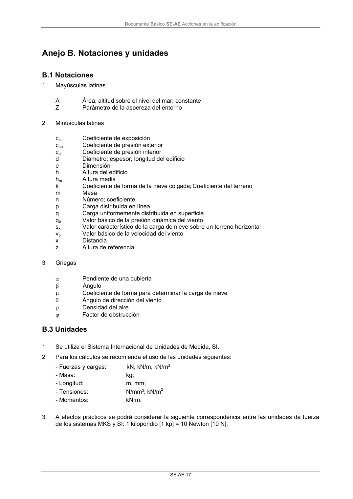

DB-SE-AE Acciones en la edificación · edición 2009-04 · capa oficial
Documento DB-SE-AE-oficial · SHA-256 del PDF 26116e5088955f0c6963a6187270cad282e1e7bf5a53a90f695c8fa50b4e4487
Copia fiel del PDF fuente · Fuente oficial
Ficha de la disposición en la fuente oficial
Formatos: JSON del segmento · Markdown
Anejo A. Terminología 1 A continuación se definen algunos términos técnicos que se emplean en este Documento Básico. Los términos de carácter general están definidos en el documento DB-SE. Carga: Fuerza, debida a la gravedad, que actúa sobre un edificio y que interesa a su estructura. Carga de nieve: Carga producida por la nieve. Esbeltez de un edificio: Relación entre la máxima altura sobre rasante y elfondo en la dirección del viento Impacto: Colisión entre un cuerpo en movimiento y una construcción. Periodo de retorno: Probabilidad de ocurrencia de un determinado evento en un periodo de refe- rencia definido. Peso propio: Carga producida por la gravedad en la masa de los elementos constructivos. Sobrecarga de uso: Peso de todo lo que puede gravitar sobre el edificio por razón de su uso. Superficie de aplicación: Superficie sobre la que actúa una fuerza concentrada. Temperatura ambiente: Temperatura del aire exterior en el emplazamiento de un edificio. Documento Básico SE-AE Acciones en la edificación SE-AE 17
